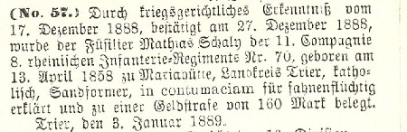
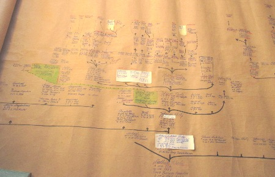
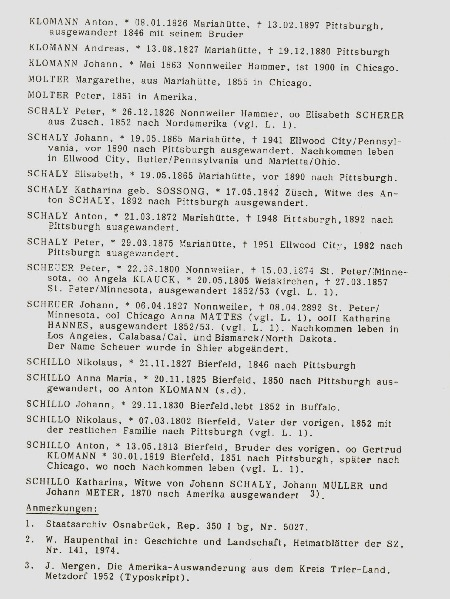
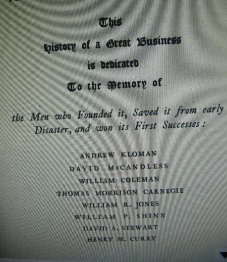
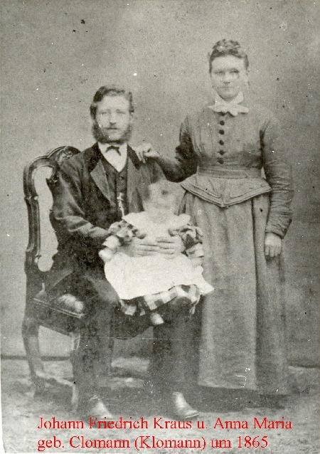
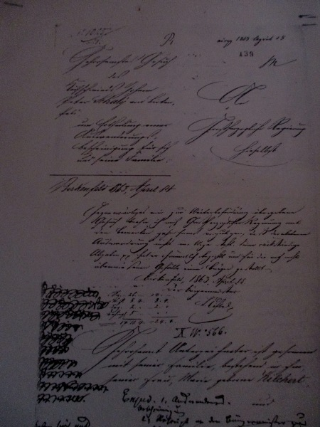

|

|

|

|

|

|

|

|

|

|

|

|

|
|
||||||||||||||||||||||||||||||
|
In meiner Ahnengalerie sind meist nur Namensträger zu sehen – wegen Platzmangel. Ich habe versucht Schaly-Familien weltweit nach ihren Wurzeln zu ordnen. Leider kann ich hier auf dieser Seite nicht alles darstellen.
siehe auch: Chronik des Eisenbahners Nikolaus Schaly u. Ehefrau
Margarete geb. Zimmer Neunkirchen - Dirmingen von
F.J. Dietzen
Kirkel 1977
Stammbaum der Familie Schaly
- Mariahütte - hier Schaly Brasilien 1
Vergrößerte Ansicht:
Da ich nun in das Alter gekommen bin wo man alles regeln soll, will ich nun auf dieser Seite veröffentlichen was ich seit 1983 zusammen getragen habe, ob geklärt oder auch nicht... Wem nützt es wenn es in der Schublade liegen bleibt und später in die Tonne kommt. Ich weis, viele denken nicht so.... Vielleicht kann man damit eine Hilfe geben für die, die heute und auch später in der Familienforschung tätig sind...... Sicher vieles ist nicht mehr auf dem neuesten Stand aber doch ein Hinweis oder Ansatzpunkt... Ich habe nur eine Tochter. Sie hat leider keine Kinder....
Neuhütten / Hunsrück im November 2016
Gernot Schaly
siehe auch Walter Petto, in Saarl. Familien Kunde..Band 2 Heft 24 1973
Nachkommen von Josef Schaly u. Amalia Krug . Fraiburgo Sc Brasil
Nachkommen von Josef, Jose Schaly u. Amalie Krug...Sohn v. Augusto Schaly und Caroline Bender....( Teillauszug)
Vergrößerte Ansicht:
Nachkommen Johann Schaly u. Gertrud Eckel
Nachkommen von Peter Schaly und Anna Kochems, zusammengestellt von Astrid Debora und Gabi Schaly

Amtsblatt Trier vom Januar 1889. Mathias war der Sohn von Anna Maria Schaly aus Mariahütte...
Landesarchiv Saarbrücken Bestand 655 /153, eigesehen 8.8.1988 u.a. Mathias Schaly geb. 13.4. 1858 vom Truppenteil nach Luxembourg desatiert...
Mathias Schaly 24 Jahre geb. Mariahütte ist 1887 in Belgien...
Nachkommen der Familie Schaly von Mariahütte u. Birkenfeld
- Übersicht
Schaly Kanada
Arno Rui Schaly aus Campos Novos zu Besuch in Neuhütten


Stammfolge Klomann
Meine Vorfahren Clomann, Klomann, Kloman,
Die Brüder und Schwestern meiner Urgroßmutter Helene Clomann in Amerika...... Im Jahre 1846 verließen die Brüder Anton und Andreas Klomann und der spätere Schwager von Anton, Nikolaus Schillo Mariahütte um nach Amerika auszuwandern. Eine beschwerliche Reise, wie Andreas in seinem ersten Brief berichtete.... Von Trabach nach Koblenz, dann nach Köln, von dort nach Antwerpen. Von hier aus dauerte die Reise 63 Tage mit dem Schiff bis New Orleans... In Amerika brachten es die Brüder zu Wohlstand und Ansehen.... Möchte nicht alle schon publizierte Aufsätze und Berichte wiedergeben :... siehe Auswanderung Petto Walter, Schaly Gernot in Saarländische Familienkunde Band 6. Jg. 1988. Aufsatz Petto Walter in Neues Trierisches Jahrbuch 1989.. Auswanderung aus dem Amt Nonnweiler 1994................. Die Brüder Klomann ließen sich in Pittsbourgh PA nieder. Ihnen folgten viele verwandte, verschwärgerte Familien. Die Hammerschmiede, Schmelzer, Former und Gießerfamilien um Nonnweiler waren fast alle miteinander versippt....... Der letzte der wohl nach Amerika auswanderte aus dieser Familie war der Neffe und die Nichte von Andreas Klomann, der Sohn und die Tochter seiner Schwester Anna Maria Klomann und deren Ehemann Johann Friedrich Kraus, Nikolaus und Maria Kraus, die 1892 nach Pittsbourgh zogen. Die Familie Nikolaus Kraus- Knauber kehrte 1896 nach Deutschland zurück.. ( einige Kinder in USA geboren ) Maria Kraus blieb noch bis 1898... Sie hatten Kontakt zur Familie ihrer Mutter, zuletzt noch mit Henry Kloman Schmidt dem Musiker, der in Leibzig und München studierte. Seine Mutter, Tochter von Anton, war lange Zeit während des Studiums in Deutschland, besuchte dort die Verwande und kehrte 1902 zurück nach Amerika. .....Es gab wohl regen Briefwechsel und Austausch von Fotos.. Es ist mir gelungen, sowie Annemarie Zander, Waltraud Schauler, Annemarie Fischer und Ingrid Capello, einwenig Klarheit und Übersicht in die Familiengeschichte der Sippen Clomann, Klomann, Hippchen und Schaly zubringen, sowie der versippten Linien. Die Briefe der Auswanderer, die noch erhalten sind... ( 1846 - 1861 werden an das Landeshauparchiv in Koblenz abgegeben. Die Fotos, leider ohne Beschriftung konnten nur zum Teil bestimmt werden...... Mein besonderer Dank gilt denen die mir bei meinen Nachforschungen über die Klomann u. Schaly Familien weitergeholfen haben:.
Francis L. Kloman Jakson Californien, Shirly Kloman Bay Vilage Ohio, Josef Koch Düren, Linda Godry Schlossborn, Annemarie Fischer Bad Dürkheim, Waltraud Schauler Reutlingen, Ingrid Capello Riva Trigodo GE Italien, Greta Liepins Enkenbach- Alsenborn, Robert Czerny Glashütten. Richard Böhm Karlsruhe, Victor u. Bernice C. Richard Chicago Ill. Bernhard Victor Mayhle Seattle Wa Annemarie Zander, Trier. Herta Summa-Gaspard Saarbrücken.. Hedwig Becker geb. Colling SB- Klaarenthal... Stand: 1994
Neuhütten im Januar 2011 Gernot Schaly
seine Familie v.Links Fancis L. Kloman, Marlyn Kloman Riddle, Harold Riddle, Teresa Riddle Jones...Jakson Cal. 1987
St. Mary,s Cemetery ist im Stadteil Lawrenceville......
Andrew Kloman u. Margarehte Wachter

John k. Winkler INCREDIBLE ( der unglaubliche) CARNEGIE.........
der erste Brief aus Amerika 1847
Brief von Anton Klomann an die Eltern und Geschwister 1852
Platte um 1865 Fotograf Borre in Wadern und Birkenfeld. Nach neusten Erkenntnissen( Fotoabgleich ) handelt es sich um Johann Friedrich Kraus und Anna Maria Clomann. In den Standes und Kirchenbücher von Nonnweiler wird der Name mit C aber auch mit K geschrieben. Der Vater von Anna Maria unterschreibt KLOMANN

Anna Maria Ewen geb. Kraus.. Enkelin v. Johann Friedrich Kraus und
Anna Maria Clomann, KLomann, geboren in Mc keès Rocks PA + 1988 in Gonnesweiler/ Saar...
John Klomann ??? * 1863 Nonnweiler Hammer ...1900 in Chicago
Änni Rohrbach geb. Hippchen ..Ännie, Geschwister und Eltern haben während der letzten Kriegsjahre in Braunshausen bei Weise Jäb gewohnt...Sie wurden Evakuiert... aus dem Saarland....Sie war eine Enkelin von Johann Heinrich Wilhelm Hippchen und Elisabeth Clomann...Ihr Bruder Rene war mit Simes Gerhard aus Braunshausen befreundet..
Foto aus Info Braunshausen v. Harald Peter
als Messdiener kam ich als zu Weise Jäb. Seine Frau bekam die Krankenkommunion. In der Guten Stube wo die Frau saß hing eine wunderschöne Schwarzwalduhr...um ca 1962-3....
Anton Klomann, viele Jahre später
Henry Klomann Schmidt 1881 - 1950 oo
Mabel Grine... Sohn Henry Kloman Schmitd Junior * 1915.... Eltern : Henry Schmidt 1847- 1885 u. Mary A. Kloman, 1859 - 1937 ,
Tochter v. Antony Kloman u. Mary A. Schillo
Henry Kloman Schmidt professor of music at the Carnegie Institute of Technology
Henry Kloman Schmidt hatte 5 Kinder....Er hatte Kontakt in die Heimat seiner Vorfahren bis ca 1945..... Seine Mutter besuchte die Verwandten in Deutschland . Sie kehrte 1902 zurück nach Amerika ( Aussage v. Zeitzeuge)
Mabel Grine geb. 1887 + 1958 Ehefrau v. Henry Kloman Schmidt
die Clomann,s von der Hubertushütte bei Bierfeld
Familie Josef Koch Oberbürgermeister in Düren, seine Ehefrau Margarethe Clomann aus Bierfeld/ Saar mit den Kindern... Josef, Heinrich, Maria, Helene, Dorthee u. Hildegard... 1936
um 1952
v. rechts Margarethe Koch geb. Clomann mit Tochter Dorothee...freundliche Mitteilung von Edith Höhner, Swisttal, Enkelin v. Margarethe Clomann
Margarethe Koch geb. Clomann zu Besuch in Bierfeld 1968, von Links Anna Maria Heck ( Heck Amei ) , Margarethe Koch geb. Clomann, genannt in Bierfeld, Hüttengret. Ihre Mutter Catharina Comann ( Hüttevaas ) lebte auf der Hubertushütte, später im Ort Bierfeld .....
wohl die Patin von Margarethe Clomann, Margarethe Simon * 21. 8. 1860 in Bierfeld + um 1942...Tochter v. Johann Simon Schneider u. Margarethe Reuter aus Bierfeld...00 5.2.1886 Anton Simon Witwer v. Maria geb. Simon * 26.1. 1855 in Bierfeld..............
Heidi und Manfred Koch aus Dortmund zu Besuch in Neuhütten. Er ist der Enkel von der Hüttengret (Margarethe Clomann) und der Urenkel von der Hüttenvase (Catharina Clomann) die auf der Hubertushütte lebten und später im Ort Bierfeld. Vor 30 Jahren waren die Clomanns von der Hütte noch vielen älteren Bierfeldern bekannt...
hier an der Ruine der Hubertushütte bei Bierfeld 2.8. 2019
Nachkommen
von Nikolaus Klomann u. Katharina Kestner. Peter Clomann, Sohn v. Barbara Clomann.....Ralf Clomann und Sohn Peter Philipp Clomann, Anna Petra Clomann......
Peter Clomann, Enkel von Peter Clomann, Sohn von Ralf Clomann
SCHILLO CHICAGO...I`m looking for successions of this familly...
Brief von Dr. Andrew Schally
Nobelpreisträger der Medizin von 1987 an Gernot Schaly in Neuhütten. Er war sehr interessiert an der Familiengeschichte, nur er hatte halt keine Zeit um sich um die Vorfahren zu kümmern. Er war ein weltberühmter Mediziner und war voll ausgelastet mit seinem Beruf...
Don Schaly Stadium - Marietta, Ohio
Das Stadion wurde zu Ehren des Hall of Fame Coach Don Schaly, der am 09.03.2005 verstorben ist, umbenannt. Don Schaly war der Sohn von John Peter Schaly und M. Hannon. Enkel von Johann Schaly, der 1865 in Mariahütte, Gemeinde Nonnweiler (heute Saarland) geboren wurde. Er ist vor 1892 in die USA ausgewandert. Seine Frau Mary Krane kam aus Saarbrücken. Die Urgroßeltern waren Anton Schaly aus Mariahütte und Katharina Sossong aus Züsch (siehe Stammbaum).
Weitere Infos siehe nachfolgenden Link:
http://www.ballparkreviews.com/marietta/marietta.htm
John Donaly Schaly ( Don Schaly ) * 1937 + 9.3.2005 ..OO Suzanne Kniceley lebte in Marietta Ohio.Sohn v. John Peter Schaly u. Mildred Hannon..Kinder : John Carl , James Hannon, Joseph, Jeffrey Schaly
Schwester von Don Schaly u. Familie -
1987 zu Besuch in Neuhütten
25 Jahre später..James Warren + und Ehefrau Joanne Schaly Warren mit Enkeltochter Michelle Moser 2013
Nachkommen von Don Schaly aus Marietta/ Ohio USA.. Jim, John, Sue, Gemälde Don Schaly....Joe und Jeff Schaly
v.l.:
Linda Lopez
Ida und Ernesto Hoffmann aus Blumenau Santa Catarina Brasilien zu Besuch in Neuhütten 1987
Neuhütten, November 1990 Besuch aus Brasilien...
Helmuth Körbes aus Sáo Jaó do Oeste SC zu Besuch in Neuhütten 1993
Tante
Lena mit Martin und Christian 1991
Edith Schaly aus Novo Hamburgo RS Brasil zu Besuch in Neuhütten Juni 1996, Hier in Braunshausen, von links..Aura Kopp, Alois Schaly, mein Vater, Edith Schaly, Franziska Schaly, meine Tante und Patin. Edith besuchte schon Jahre zuvor die Familie Hans Schaly in Dirmingen/ Saar.
Edith Schaly aus Novo Hamburgo RS besucht Neuhütten 1996
Edith Schaly und Aura Kopp in Herrstein 1996
Ida und Ernesto Hoffmann aus Blumenau Sc Brasil zu Besuch in Neuhüttem 1993. Hier in Palzem / Mosel ..Weingut Boesen, links Alois Boesen
Annemarie Fischer besucht Züscher Hammer
Am Kohlenmeiler 2013
12.05. 2013 Annemarie Zander wird 100 Jahre alt.....Annemarie Zander ist am
12. Dezember 2023 im Alter von 110 Jahren verstorben...
Diese Angaben aus Brasilien über eine Einwanderung der Schaly Familie aus der Schweiz konnte nicht nachgewiesen werden..G.Schaly 2022
Johann Schaly * 19.08. 1865 Mariahütte , Gemeinde Nonnweiler/Saar + 29.07. 1941 Ellwood City PA ..begraben in Carnegie PA oo 1896 Mary Krane * 1875 in Saarbrücken - Mahlstatt + 1973.. Johann Schaly und seine Zwillingsschwester Elisabeth + 1896 sind vor 1892 ausgewandert nach USA ...Sohn von Anton Schaly u. Katharina Sossong..... Kinder: JOHN Peter 1897 - 1958 ..Mary u. Katharine...
Peter Schaly * 28. 3. 1875 in Mariahütte ( Bouß ) + 1951 Ellwood City PA oo mit Margreth Fellner aus Bayern, Nähe von München. Das Paar hatte eine Tochter, die 1987 nicht mehr lebt. Ausgewandert mit seiner Mutter Katharina Sossong und Bruder Anton mit Consens v. 5. 7. 1892 Peter Schaly arbeitete als Eisengießer in Pittsbourgh PA und lebte in Ellwood City. Quelle: Briefe v. Jakob Mathiue + 1992
Anton Schaly ( Tony ) * 22.3. 1872 Mariahütte ( Bouß ) + 1948 Pittsbourgh PA von Beruf Eisengießer,,oo Ida Seibel.. Sie lebten in Pittsbourgh, hatten keine Kinder. Ausgewandert nach USA 1892...Ihre Mutter..
Katharina Sossong Schaly kam 1892 mit nach Amerika. Sie ist gestorben im Juni 1924, begraben in Carnegie PA. Sie war die Tochter v. Johann Sossong u. Elisabeth Kräber aus Züsch.. Quelle: Jakob Mathiue..Ellwood City PA. Zeitzeuge....
Anton ( Toni ) Schaly + Pittsbourgh PA USA
Es gab wohl Kontakte zu den Auswandern . Briefe, Fotos wurden ausgetauscht solange unsere Urgroßeltern auf der Mariahütte lebten, sowie von der Schaly und auch der Klomann Familie . Danach kamen die Fotos nach Gusenburg. Dort lebten die beiden Schwestern meines Großvaters, Katharina und Margarethe Schaly. Katharina war verheiratet mit Peter Lermen, , er stammte aus Theley. Margarethe war ledig und half ihr Schwester im Haushalt. Katharina war Hebamme. Als Johann Schaly und Helene Clomann starben kamen die vielen Fotos und auch Briefe nach Gusenburg. Leider waren sie nicht beschriftet und keiner wusste mehr wer wohl darauf abgebildet waren. Einige konnte ich herausfinden in den 1980 Jahren. Hatte Kopien gemacht. Im Laufe der Jahre wurde renoviert und umgebaut und die Fotos wurden entsorgt, weil halt keiner daran Interesse hatte . Heute gibt es noch viele Nachkommen von den Auswandern von Mariahütte, die mich auch schon mal in Neuhütten besucht hatten.
Nur muss man feststellen, das es nicht viele gibt , die an den entfernten Verwandten in Amerika interessiert sind.
Gernot Schaly, Urenkel von Johann Schaly und Helene Clomann aus Mariahütte...
August Schaly ausgewander 1861 nach Brasilien
Auswanderungsgesuch des Johann Peter Schaly und seiner Ehefrau Maria Kilchert aus Birkenfeld und den Kindern. August ist auch mit aufeführt..Er ist 1861 ohne Erlaubnis nach Brasilien ausgewandert.

der Vater von Carolina Schaly geb. Bender
August Schaly ausgewandert 1861 nach Brasilien ...emigrated to Brasil
J
ohann Peter Schaly * 18. 6. 1820 Birkenfeld +1872 Brasilien
ooMaria Kilchert... mit den Kindern Gustav, Josef, Maria, Philippine, Peter 1863 nach Brasilien mit Consens...Eltern u. Geschwister v. August Schaly
Zur Auswanderung von Peter Schaly u. Maria KILCHERT. Hier kann man nun genau nachlesen, wer die Ehefrau von Peter Schaly war.... nicht Hilger, oder ..... sondern KILCHERT....
Peter Schaly * 1826 Nonnweiler oo Elisabeth Scherer aus Züsch...
Sohn Peter * 1850....... 1852 nach USA..keine weitere Daten bekannt...
Auswanderung :
Nikolaus u. Anna Maria Klomann nach Louisville MO
i´m looking for successions of this familly-pictures . Eisenhardt DETROIT MICH. CHICAGO and Pittsbourh PA
Fotos aus Deutschland, unbekannt
|